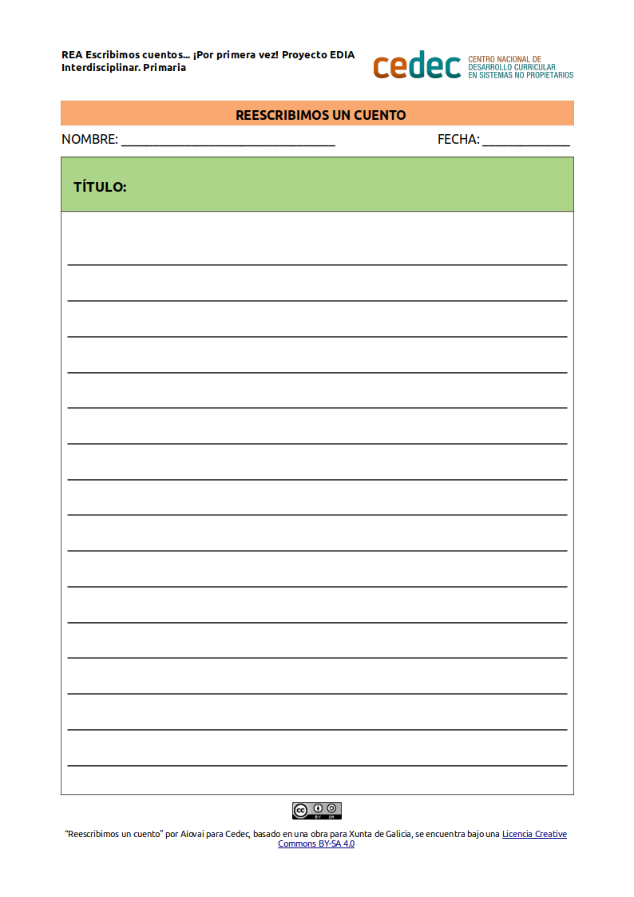

Reescribimos un cuento
En esta tarea el alumnado realizará la reescritura de un cuento conocido. Esta actividad libera al alumnado del ¿qué pongo?, ya que la historia es conocida. Conocer diferentes versiones de un mismo texto suele ser inspirador para crear una nueva.
Producir la reescritura de un cuento conocido supone para el alumnado establecer fuertes relaciones entre la lectura y la escritura. Cuando proponemos "leer para escribir" el propio texto ofrece la información necesaria para resolver problemas de escritura.
Con esta actividad, se diseñan situaciones de escritura que brindan oportunidades para que se desarrollen como escritores aunque sus producciones no sean totalmente convencionales.
ACTIVIDAD: Reescribimos un cuento
- Duración:
- 60 min
- Agrupamiento:
- Individual
De forma individual el alumnado elegirá libremente uno de los cuentos analizados en la primera actividad para proceder a reescribirlo. Servirá de evaluación inicial del alumnado, que nos ayudará a comprobar su punto de partida y conocimientos en cuanto a algunos aspectos relevantes en los que queremos incidir: personajes y estructura.
- Modelo para la reescritura de un cuento
-
Entregamos este modelo al alumnado para la reescritura de uno de los cuentos analizados, teniendo en cuenta que es posible su adaptación previa por parte de la persona docente con el software LibreOffice Writer.
- Modelo de plantilla para reescribir cuentos (descargar en formato editable odt y en pdf).

Dos minutos para pensar
Empezamos ahora con la segunda entrada de nuestro diario de clase con el título "Reescribimos un cuento".

Hemos reescrito un cuento conocido. Seguramente algunas cosas te han resultado sencillas y en otras has encontrado dificultades. ¡Así es como aprendemos! Podemos contestar juntos a alguna de estas preguntas:
- ¿Habías reescrito alguna vez un cuento conocido?
- ¿Te ha costado mucho pensar lo que tenías que escribir?
- ¿Qué parte de la tarea te ha resultado más difícil? ¿y más fácil?
- ¿Te ha gustado esta actividad?
Además de contestar a estas preguntas, podemos anotar en nuestro Diario las dudas que nos surjan o nuestras reflexiones.
Obra publicada con Licencia Creative Commons Reconocimiento Compartir igual 4.0